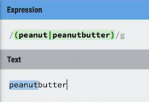
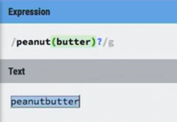
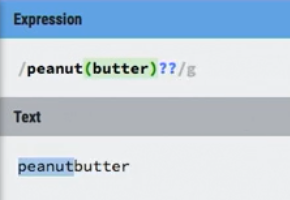
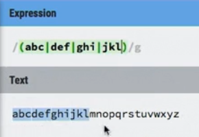
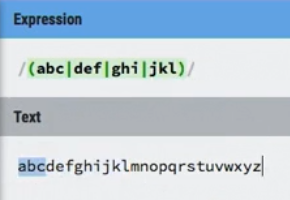
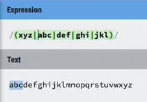

the following is an example of regex being eager
since grouping is given leftmost precedence
it will not return peanutbutter
One way to fix this would be
adding the second question mark will make the expression "lazy"
so it will stop after finding peanut
examples
the following will work when it global because regex is "greedy"
but won't work when not in global because regex is also "eager"
notice how the following doesn't work
this is because of the | operator, it stops after finding one of the matches
Complex example
/\w+_\d{2,4}|\d{4}_export|export_\d{2}
looking for three different things
- first, any number of word characters
- followed by 2 to 4 digits
- second, any four digits
- followed by the word export
- third, the word export
- followed by two digits
this would be better if written:
/export_\d{2}|\d{4}_export|\w+_\d{2,4}
this is because it's greedy,so grabbing any word "\w+", it will try
to grab any word as opposed to the more specific word export